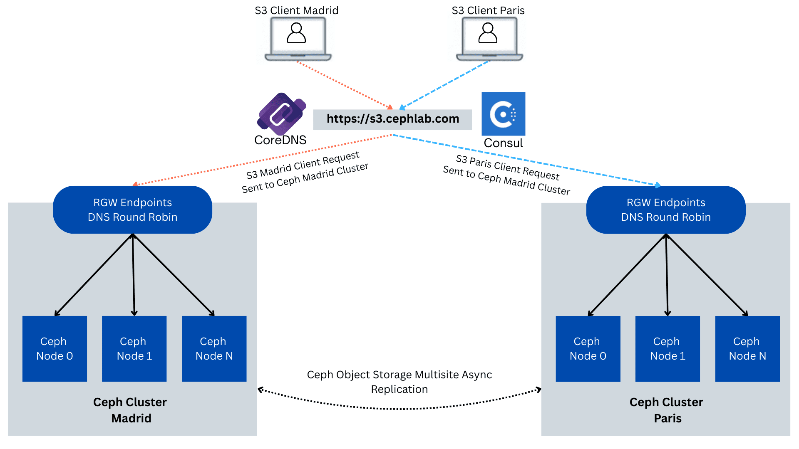

Part 4. Consul-Powered Global Load Balancing for Ceph Object Gateway (RGW)


Part3. Consul-Powered Global Load Balancing for Ceph Object Gateway (RGW) ¶
Note: this series of articles describes functionality that is expected to be available an upcoming Tentacle dot release.
Introduction ¶
Quick refresher from Part 3: we stood up a global control plane across the Madrid and Paris sites. Each site makes its own routing decisions locally, and the two cooperate over the WAN, so traffic always goes to healthy, nearby gateways by default and automatically shifts to the other site if the local one can’t serve. We validated the behavior end-to-end without yet changing client URLs or DNS.
Part 3 is available here.
In Part 4 (this post), we turn that policy into a standard DNS experience with CoreDNS. We’ll run three CoreDNS instances per site for HA, publish a small stub zone, and add simple rewrites so that s3.cephlab.com resolves to healthy, nearby ingress by default and automatically shifts to the peer site during incidents. We’ll also keep pinned per-site names (s3.madrid.cephlab.com, s3.paris.cephlab.com) for deterministic routing when you need it. Finally, we’ll validate steady state, hard-stop one site to prove failover, and cover a few notes on eventual consistency and lightweight client-side retries.
CoreDNS in the GLB Architecture (Active/Active) ¶
In this section, we stand up CoreDNS in each site (three instances per DC via cephadm), publish a stub zone for your domain, then forward the special .consul domain to the local Consul DNS on TCP port 8600. We then add rewrite rules so the public names (s3.cephlab.com and the optional s3.madrid.cephlab.com / s3.paris.cephlab.com) are translated into the S3 prepared‑query form, forwarded to Consul. The replies are rewritten back to the original names. We'll create the CoreDNS config file Corefile, copy it to peers with scp, and apply the Cephadm spec per cluster, then finally verify with dig that global and per‑site names resolve to healthy, local endpoints with automatic failover.

Hans-on: CoreDNS Setup and Configuration ¶
We create the Madrid Corefile (/etc/coredns/Corefile) and distribute it to the rest of the nodes in the cluster. To understand the details of the configuration options used here for CoreDNS, consult part 2 of this blog series.
ceph-node-00# mkdir -p /etc/coredns
ceph-node-00# cat >/etc/coredns/Corefile <<'EOF'
.:53 {
log
errors
forward . 8.8.8.8
}
# Forward all .consul queries to Madrid Consul DNS
consul {
forward . 192.168.122.12:8600 192.168.122.179:8600 192.168.122.94:8600
log
errors
}
s3.cephlab.com {
rewrite stop { name exact s3.cephlab.com s3.query.consul. ; answer name s3.query.consul. s3.cephlab.com. }
rewrite stop { name regex (.*)\.s3\.cephlab\.com s3.query.consul. ; answer auto }
forward . 192.168.122.12:8600 192.168.122.179:8600 192.168.122.94:8600
log
errors
debug
}
s3.madrid.cephlab.com {
rewrite stop { name exact s3.madrid.cephlab.com s3.query.madrid.consul. ; answer name s3.query.madrid.consul. s3.madrid.cephlab.com. }
forward . 192.168.122.12:8600 192.168.122.179:8600 192.168.122.94:8600
log
errors
debug
}
s3.paris.cephlab.com {
rewrite stop { name exact s3.paris.cephlab.com s3.query.paris.consul. ; answer name s3.query.paris.consul. s3.paris.cephlab.com. }
forward . 192.168.122.138:8600 192.168.122.175:8600 192.168.122.214:8600
log
errors
debug
}
EOF
Distribute the CoreDNS Corefile to all Madrid nodes:
ceph-node-00# for i in 00 01 02 ; do scp -pr /etc/coredns/Corefile \
ceph-node-$i.cephlab.com:/etc/coredns/Corefile ; done
Create the Paris CoreDNS Corefile (/etc/coredns/Corefile ):
ceph-node-04# mkdir -p /etc/coredns
ceph-node-04# cat >/etc/coredns/Corefile <<'EOF'
.:53 {
log
errors
forward . 8.8.8.8
}
# Forward all .consul queries to Paris Consul DNS
consul {
forward . 192.168.122.138:8600 192.168.122.175:8600 192.168.122.214:8600
log
errors
}
s3.cephlab.com {
rewrite stop { name exact s3.cephlab.com s3.query.consul. ; answer name s3.query.consul. s3.cephlab.com. }
rewrite stop { name regex (.*)\.s3\.cephlab\.com s3.query.consul. ; answer auto }
forward . 192.168.122.138:8600 192.168.122.175:8600 192.168.122.214:8600
log
errors
debug
}
s3.madrid.cephlab.com {
rewrite stop { name exact s3.madrid.cephlab.com s3.query.madrid.consul. ; answer name s3.query.madrid.consul. s3.madrid.cephlab.com. }
forward . 192.168.122.12:8600 192.168.122.179:8600 192.168.122.94:8600
log
errors
debug
}
s3.paris.cephlab.com {
rewrite stop { name exact s3.paris.cephlab.com s3.query.paris.consul. ; answer name s3.query.paris.consul. s3.paris.cephlab.com. }
forward . 192.168.122.138:8600 192.168.122.175:8600 192.168.122.214:8600
log
errors
debug
}
EOF
Distribute the CoreDNS Corefile to all Paris nodes:
ceph-node-04# for i in 04 05 06 ; do scp -pr /etc/coredns/Corefile \
ceph-node-$i.cephlab.com:/etc/coredns/Corefile ; done
Configure the Cephadm spec file for the CoreDNS services running at the Paris Site:
ceph-node-04# cat >core-dns.yaml <<'EOF'
service_type: container
service_id: coredns
placement:
hosts:
- ceph-node-04
- ceph-node-05
- ceph-node-06
spec:
image: docker.io/coredns/coredns:latest
entrypoint: '["/coredns", "-conf", "/etc/coredns/Corefile"]'
args:
- "--net=host"
ports:
- 53
bind_mounts:
- ['type=bind','source=/etc/coredns/Corefile','destination=/etc/coredns/Corefile', 'ro=false']
EOF
Next, with ceph orch we apply the configuration:
ceph-node-04# ceph orch apply -i core-dns.yaml
ceph-node-04# ceph orch ps | grep coredns
container.coredns.ceph-node-04 ceph-node-04 *:53,53 running (3m) 6s ago 11.8M - <unknown> 0392ee038903 11aa22bb33cc
container.coredns.ceph-node-05 ceph-node-05 *:53,53 running (3m) 6s ago 11.7M - <unknown> 0392ee038903 22bb33cc44dd
container.coredns.ceph-node-06 ceph-node-06 *:53,53 running (3m) 6s ago 11.9M - <unknown> 0392ee038903 33cc44dd55ee
Configure the Cephadm spec file for the CoreDNS services running in Madrid:
ceph-node-00# cat >core-dns.yaml <<'EOF'
service_type: container
service_id: coredns
placement:
hosts:
- ceph-node-00
- ceph-node-01
- ceph-node-02
spec:
image: docker.io/coredns/coredns:latest
entrypoint: '["/coredns", "-conf", "/etc/coredns/Corefile"]'
args:
- "--net=host"
ports:
- 53
bind_mounts:
- ['type=bind','source=/etc/coredns/Corefile','destination=/etc/coredns/Corefile', 'ro=false']
EOF
Next, with the ceph orch command, we apply the configuration in Madrid:
ceph-node-00# ceph orch apply -i core-dns.yaml
ceph-node-00# ceph orch ps | grep coredns
container.coredns.ceph-node-00 ceph-node-00 *:53,53 running (3m) 4s ago 11.6M - <unknown> 0392ee038903 feaa8305273a
container.coredns.ceph-node-01 ceph-node-01 *:53,53 running (3m) 6s ago 11.9M - <unknown> 0392ee038903 c86ee93dab60
container.coredns.ceph-node-02 ceph-node-02 *:53,53 running (3m) 6s ago 12.1M - <unknown> 0392ee038903 06b73ad257ca
Validation and Failover ¶
In this final section, we move from design to proof. First, we capture the steady state so you can see what "healthy" looks like: how DNS answers are shaped, where the prepared query executes, and how a simple S3 call behaves. Then we deliberately take one site offline (a hard stop of the Madrid Ceph nodes) to observe how resolution converges to the surviving site and how S3 client requests continue to succeed. We’ll also provide evidence by tailing Ceph Object Gateway logs, and finally bring the site back, monitoring as it heals and rebalances.
Healthy state validation ¶
From the view of a client in Madrid, we will configure DNS resolution for the client to query first our CoreDNS instance in Madrid (192.168.122.12) and then the instance in Paris(192.168.122.138):
[root@rhel1 ~]# cat /etc/resolv.conf
# Generated by NetworkManager
nameserver 192.168.122.12
nameserver 192.168.122.138
nameserver 192.168.122.1
We will be using dig to do some basic initial validation, first the GLB endpoint: s3.cephlab.com:
When we use Madrid DNS server (192.168.122.12), we get a list of IP addresses for the HAproxy concentrators in Madrid (192.168.122.[12,94,79]).
When I use the Paris DNS servers (192.168.122.138), we get a list of IP addresses for the HAproxy concentrators in Paris (192.168.122.[175,138,214]).
[root@rhel1 ~]# dig +short @192.168.122.12 s3.cephlab.com
192.168.122.12
192.168.122.94
192.168.122.179
[root@rhel1 ~]# dig +short @192.168.122.138 s3.cephlab.com
192.168.122.175
192.168.122.138
192.168.122.214
Now we can also test the pinned per-site URLs/endpoints; we can resolve both FQDNs from Madrid and Paris, s3.paris.cephlab.com and s3.madrid.cephlab.com :
[root@rhel1 ~]# dig +short @192.168.122.12 s3.paris.cephlab.com
192.168.122.214
192.168.122.138
192.168.122.175
[root@rhel1 ~]# dig +short @192.168.122.12 s3.madrid.cephlab.com
192.168.122.12
192.168.122.94
192.168.122.179
Now let's connect to the S3 endpoint and list the available buckets. Because the client node has its primary DNS pointing to Madrid, we will access the Madrid Ceph Cluster:
[root@rhel1 ~]# aws --endpoint http://s3.cephlab.com:8080 s3 ls
2025-08-19 07:47:54 bucket1
[root@rhel1 ~]# aws --endpoint http://s3.cephlab.com:8080 s3 ls
2025-08-19 07:47:54 bucket1
By checking the audit logs of our Ceph cluster, we see that the requests have gone to ceph-node-00, which is part of Madrid’s Ceph cluster. In this example, we are using a script that aggregates and filters the logs. Centralized logging can be configured from the Dashboard.
ceph-node-00# bash script-opslogs.sh
2025-09-15T10:16:43.747172Z 192.168.122.12 list_buckets GET / HTTP/1.1 madrid ceph-node-00-RGW2
2025-09-15T10:17:32.664384Z 192.168.122.12 list_buckets GET / HTTP/1.1 madrid ceph-node-00-RGW1
We now switch the DNS configuration to put the Paris DNS first in the list, so we pretend to be in Paris. We compare the audit log output, and see that S3 client requests are now hitting the RGWs in our Paris Ceph Cluster. The first request went to ceph-node-04 and the second request to an RGW in ceph-node-05, both from our Paris Ceph cluster:
[root@rhel1 ~]# cat /etc/resolv.conf
# Generated by NetworkManager
nameserver 192.168.122.138
nameserver 192.168.122.12
nameserver 192.168.122.1
[root@rhel1 ~]# aws --endpoint http://s3.cephlab.com:8080 s3 ls
2025-08-19 07:47:54 bucket1
[root@rhel1 ~]# aws --endpoint http://s3.cephlab.com:8080 s3 ls
2025-08-19 07:47:54 bucket1
ceph-node-00# bash script-opslogs.sh
time client_ip op uri dc rgw
2025-09-15T10:16:43.747172Z 192.168.122.12 list_buckets GET / HTTP/1.1 madrid ceph-node-00-RGW2
2025-09-15T10:17:32.664384Z 192.168.122.12 list_buckets GET / HTTP/1.1 madrid ceph-node-00-RGW1
2025-09-15T10:27:13.724159Z 192.168.122.138 list_buckets GET / HTTP/1.1 paris ceph-node-04-RGW1
2025-09-15T10:27:15.397246Z 192.168.122.175 list_buckets GET / HTTP/1.1 paris ceph-node-05-RGW1
Next, a final test with the pinned DC endpoint, even with our DNS pointing to the DNS servers in Paris, we're forcing the client request to upload to Madrid an object via the FQDN s3.madrid.cephlab.com. When we check the audit logs, we see that even with our client in Paris, we have hit an RGW in Madrid; this is the behavior we expect.
[root@rhel1 ~]# aws --endpoint http://s3.madrid.cephlab.com:8080 s3 cp /etc/hosts s3://bucket1/hosts
upload: ../etc/hosts to s3://bucket1/hosts
ceph-node-00# bash script-opslogs.sh
time client_ip op uri dc rgw
2025-09-15T10:40:08.641711Z 192.168.122.12 put_obj PUT /bucket1/hosts HTTP/1.1 madrid ceph-node-02-RGW2
Now that validation with a healthy setup has finished, let's test a failure scenario.
Complete Site Failure (Simulate Madrid Down) ¶
In this section, we’ll prove that the global endpoint remains functional even when an entire site becomes unavailable. We’ll hard-stop the Madrid RGW/HAProxy nodes to simulate a real outage (no graceful drain). While client traffic continues to hit s3.cephlab.com, we’ll monitor DNS/Consul convergence and confirm, via RGW audit logs, that requests are now being served from the surviving site: Paris. Finally, we’ll bring Madrid back and see both sites rejoin the rotation for the global S3 endpoint.
 and RGWs. No draining: we pull the plug using a "stop" from the hypervisor, shoutout to kcli.
What to look for: after TTL, DNS answers and prepared-query results will contain only Paris addresses.
hypervisor# kcli stop vm ceph-node-00 ceph-node-01 ceph-node-02 ceph-node-03
Stopping vm ceph-node-00 in openstackbox...
ceph-node-00 stopped
Stopping vm ceph-node-01 in openstackbox...
ceph-node-01 stopped
Stopping vm ceph-node-02 in openstackbox...
ceph-node-02 stopped
Stopping vm ceph-node-03 in openstackbox...
ceph-node-03 stopped
After the TTL expires (less than 5 seconds), we see that the DNS records are now pointing to the HAproxy Concentrators in the Paris DC. We then upload an object and list it:
[root@rhel1 ~]# dig +short s3.cephlab.com A
192.168.122.138
192.168.122.175
192.168.122.214
[root@rhel1 ~]# aws --endpoint http://s3.cephlab.com:8080 s3 cp /etc/hosts s3://bucket1/hosts1
upload: ../etc/hosts to s3://bucket1/hosts1
[root@rhel1 ~]# aws --endpoint http://s3.cephlab.com:8080 s3 ls s3://bucket1
2025-09-15 06:40:08 158 hosts
2025-09-15 08:02:35 158 hosts1
We check our object audit logs, and see how when Madrid DC is down, the Madrid user/client request will get transparently redirected to the Paris DC endpoints, without having to make any modifications on the client side:
ceph-node-00# bash script-opslogs.sh
2025-09-15T12:02:35.976108Z 192.168.122.138 put_obj PUT /bucket1/hosts1 HTTP/1.1 paris ceph-node-04-RGW1
2025-09-15T12:02:47.949125Z 192.168.122.175 list_bucket GET /bucket1?list-type=2&prefix=&delimiter=%2F&encoding-type=url HTTP/1.1 paris ceph-node-05-RGW1
Recovery, Bring Madrid Back Online ¶
We now reverse the failure and boot the Madrid site. This is a cold start (similar to real-world power restoration), so Consul agents, CoreDNS, HAProxy terminators, and RGWs on each node will come up, rejoin their respective clusters, and begin reporting health. After a few seconds (our DNS TTL is 5s), Madrid endpoints should reappear in answers and start serving traffic locally again.
# kcli start vm ceph-node-00 ceph-node-01 ceph-node-02 ceph-node-03
Starting vm ceph-node-00...
ceph-node-00 started
Starting vm ceph-node-01...
ceph-node-01 started
Starting vm ceph-node-02...
ceph-node-02 started
Starting vm ceph-node-03...
ceph-node-03 started
Once Consul health checks go green and CoreDNS refreshes, the global name should point to Madrid entries again. To generate a clear audit trail after recovery, we perform a write operation against the same global hostname. Here, we delete a test object from bucket1. Any simple PUT/DELETE works; the goal is to produce a fresh entry in the RGW ops logs from the restored site.
[root@rhel1 ~]# dig +short s3.cephlab.com A
192.168.122.12
192.168.122.179
192.168.122.94
[root@rhel1 ~]# aws --endpoint http://s3.cephlab.com:8080 s3 rm s3://bucket1/hosts
delete: s3://bucket1/hosts
Finally, rerun the log collector to show where the request landed after recovery. We now see entries with ``dc = madrid` (locality restored).
ceph-node-00# bash script-opslogs.sh
time client_ip op uri dc rgw
2025-09-15T12:22:24.190298Z 192.168.122.12 delete_obj DELETE /bucket1/hosts HTTP/1.1 madrid ceph-node-00-RGW
Metadata Control Plane: Active/Passive ¶
Data is active/active across sites, but metadata (users, buckets, policies, quotas, lifecycle rules, etc.) is active/passive. In a Ceph Object multisite setup, the zonegroup master is the single metadata authority. Practically:
When the metadata master is up, any site can serve object I/O. Bucket/user changes are coordinated via the master.
If the metadata master goes down, existing buckets continue to function (object reads/writes remain unaffected). Still, you cannot create/delete buckets or change users/policies until the master is available again or you promote the peer site.
When to fail over the metadata master ¶
If the outage is brief and you don’t need to change buckets/users, do nothing; let the master recover.
If downtime is extended and you must perform metadata changes, promote the peer site to become the zone group (and realm) master. Detailed steps to failover can be found here.
IMPORTANT: Avoid dual masters at all costs. Before promotion, ensure that the failed site is truly offline: powered off, fenced, or hard-isolated. Promoting while the original master is still reachable can create a metadata split-brain that’s painful to unwind.
Hardening Notes (From Lab to Prod) ¶
This post shows the mechanics of the solution in a lab. For production, you should harden the control plane, shrink the attack surface, and add proper observability and monitoring. Here we make suggestions: this is not a comprehensive list.
Consul ACLs : Bootstrap ACLs, then run with least-privilege policies (separate tokens for servers, agents, automation). Grant only
service:read / prepared-query:executeto CoreDNS; restrict write to CI/admins.Transport security: Enable mTLS for Consul RPC (TCP ports
8300–8302) and serve the HTTP API over HTTPS (TCP port8501). Encrypt gossip (Serf) with a key. Bind the plaintext API (TCP port8500) to127.0.0.1or disable it.WAN exposure: Prefer Mesh Gateways so servers don’t need to be directly reachable over the public WAN
CoreDNS posture: Run three per DC. Disable open recursion.
Ingress Encryption in Transit (HAProxy/RGW): Terminate TLS at the Ceph Object Gateway (RGW) for client and replication traffic.
Quorum & placement: Ensure 3 Consul servers per DC (or other odd number), anti-affined across racks/hosts. Enable Autopilot settings for graceful server replacement and upgrades.
DNS Policy : Set a DNS TTL that matches your RTO (5–15s typical). Publish guidance for pinned per-site names (when to use them, and that they sacrifice some GLB benefits).
Conclusion ¶
We’ve closed the loop. With CoreDNS in front of Consul, the single global name s3.cephlab.com now resolves to a healthy, nearby ingress in normal operation and automatically shifts across sites during site/DC incidents. We proved it with simple dig checks, real S3 calls, a hard site outage, and RGW audit logs that showed traffic moving from Madrid to Paris (and back) without any client-side changes. The result is a practical GLB for the Ceph Object Gateway(RGW) that favors locality, limits blast radius, and keeps applications blissfully unaware of failures.
The authors would like to thank IBM for supporting the community with our time to create these posts.